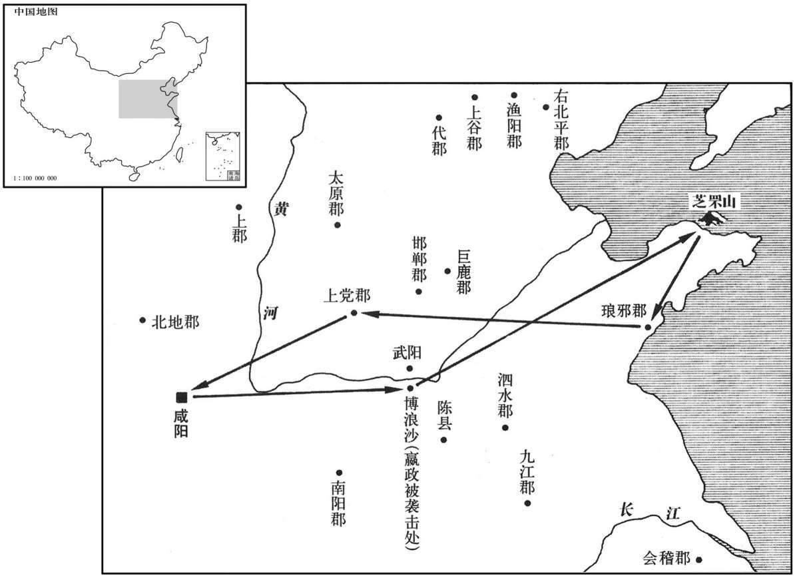

公元前218年资治通鉴：本年记事、原文与白话对照
按原书编年位置阅读；追叙和史论不等于本年发生的事件。白话采用所据译本，缺译不以生成译文补齐。
卷7 · 本年记事
公元前218年 · 始皇帝在位第29年
二十九年〔（癸未、前二一八）〕
本年事件索引（现代整理）

本年形势与背景参考图
原文 · 胡三省注本
始皇东游，至阳武博浪沙中，〔班志，阳武县属河南郡，有博浪沙。索隐曰：今浚仪西北四十里有博浪城。史记正义曰：郑州阳武县有博浪沙，当官道。师古曰：“狼”，音浪，史记作“浪”，正义音狼。〕张良令力士操铁椎狙击始皇，误中副车。〔狙，玃属。狙之伺物，必伏，乘其便而击之。狙击者，谓伏其旁而狙伺以击之也。狙，千恕翻，又千余翻。索隐曰：汉官仪：天子有属车，即副车，奉车即御而从后。余谓副，贰也；汉有五时副车，又在属车之外。〕始皇骜，求，弗得；令天下大索十日。〔索，山客翻。〕
白话 · 所据译本
始皇帝出巡东方，抵达阳武县的博浪沙时，张良让大力士手持铁锤袭击始皇，但却误中随天子车驾而行的副车。始皇大惊失色，想抓刺客却未能擒到，于是下令全国进行十天的大搜捕。
原文 · 胡三省注本
始皇遂登之罘，〔班志：之罘山在东莱睡县。括地志：之罘山在莱州文登县东北一百八十里。罘，音浮。〕刻石；旋，之琅邪，道上党入。〔旋，即还字。之，往也。〕
白话 · 所据译本
始皇帝随后登上之罘山，刻石颂德。归途中前往琅邪，取道上党回到咸阳。